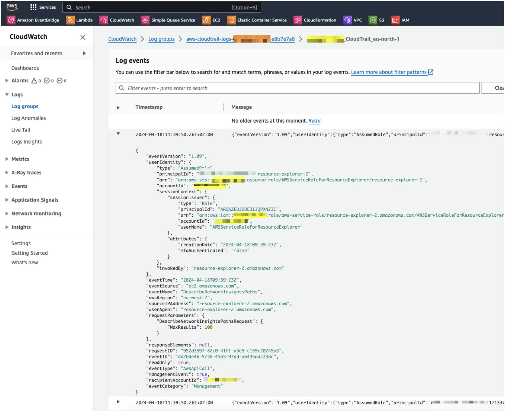
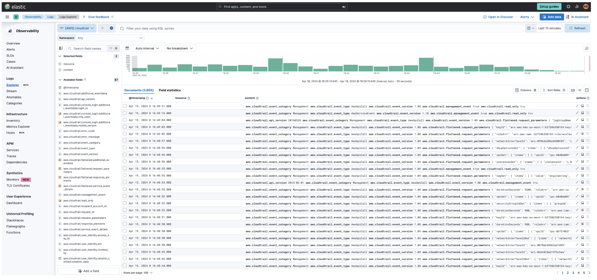
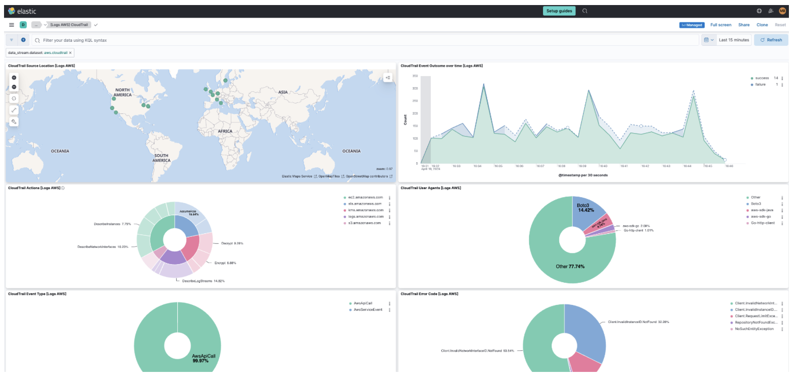

Monitor CloudTrail logsedit
In this section, you’ll learn how to monitor and analyze the CloudTrail logs you send to Elastic with Amazon Data Firehose. You will go through the following steps:
- Install AWS integration in Kibana
- Export Cloudtrail events to CloudWatch
- Set up a Firehose delivery stream
- Set up a subscription filter to route Cloudtrail events to a delivery stream
- Visualize your CloudTrail logs in Kibana
Before you beginedit
We assume that you already have:
- An AWS account with permissions to pull the necessary data from AWS.
- A deployment using our hosted Elasticsearch Service on Elastic Cloud. The deployment includes an Elasticsearch cluster for storing and searching your data, and Kibana for visualizing and managing your data. AWS Data Firehose works with Elastic Stack version 7.17 or greater, running on Elastic Cloud only.
Make sure the deployment is on AWS, because the Amazon Data Firehose delivery stream connects specifically to an endpoint that needs to be on AWS.
Step 1: Install AWS integration in Kibanaedit
- In Kibana, navigate to Management > Integrations and browse the catalog to find the Amazon Data Firehose integration.
- Navigate to the Settings tab and click Install Amazon Data Firehose assets.
Step 2: Export Cloudtrail events to CloudWatchedit
To export CloudTrail logs to CloudWatch, you must set up a trail through the following steps:
- Go to the AWS console and navigate to CloudTrail.
-
Click Create trail and configure the general details on the Choose trail attributes panel, like:
- Trail name
-
Storage location
By default, CloudTrail exports data to an S3 bucket. It isn’t possible to opt-out from S3.
-
Specify the encryption options.
When exporting data from CloudTrail to S3, it is recommended to enable Log file SSE-KMS encryption. You can use an existing AWS KMS key, or create a new one.
-
Enable CloudWatch Logs and confirm the Log group name.
CloudTrail offers the option to send events to CloudWatch as logs. You must enable this option to forward the events to Amazon Data Firehose.
You also need to create an IAM Role, or select an existing one, to enable CloudTrail to put log events into a CloudWatch stream.
- From the Choose log events panel, select the event types you want to send to Elastic.
- Review the attributes and log events you have specified in the previous steps and click Create trail.
-
Verify everything is working as expected.
Open the log group you just created on CloudWatch and make sure there are events from the CloudTrail you have just created.

Step 3: Set up a Firehose delivery streamedit
You now have a CloudWatch log group with events coming from CloudTrail. For more information on how to set up a Amazon Data Firehose delivery stream to send data to Elastic Cloud, you can also check the setup guide.
-
Collect Elasticsearch endpoint and API key from your deployment on Elastic Cloud.
- Elasticsearch endpoint URL: Enter the Elasticsearch endpoint URL of your Elasticsearch cluster. To find the Elasticsearch endpoint, go to the Elastic Cloud console and select Connection details.
- API key: Enter the encoded Elastic API key. To create an API key, go to the Elastic Cloud console, select Connection details and click Create and manage API keys. If you are using an API key with Restrict privileges, make sure to review the Indices privileges to provide at least "auto_configure" & "write" permissions for the indices you will be using with this delivery stream.
-
Set up the delivery stream by specifying the following data:
- Elastic endpoint URL
- API key
- Content encoding: gzip
- Retry duration: 60 (default)
- Backup settings: failed data only to s3 bucket
You now have an Amazon Data Firehose delivery specified with:
- source: direct put
- destination: elastic
- parameters: es_datastream_name: logs-aws.cloudtrail-default
Step 4: Set up a subscription filter to route Cloudtrail events to a delivery streamedit

The Amazon Data Firehose delivery stream is ready to send logs to your Elastic Cloud deployment.
-
Visit the log group with the CloudTrail events.
Open the log group where the CloudTrail service is sending the events. You must forward these events to an Elastic stack using the Amazon Data Firehose delivery stream. CloudWatch log group offers a subscription filter that allows you to choose log events from the log group and forward them to other services like Amazon Kinesis stream, an Amazon Data Firehose stream, or AWS Lambda.
-
Create a subscription filter for Amazon Data Firehose by following these steps.
-
Choose the destination account.
Select the delivery stream you created in step 3.
-
Grant permission.
Follow these steps to enable the CloudWatch service to send log events to the delivery stream in Amazon Data Firehose:
-
Create a new role with a trust policy that allows CloudWatch to assume the role.
{ "Version": "2012-10-17", "Statement": [ { "Effect": "Allow", "Principal": { "Service": "logs.eu-north-1.amazonaws.com" }, "Action": "sts:AssumeRole", "Condition": { "StringLike": { "aws:SourceArn": "arn:aws:logs:eu-north-1:<YOUR ACCOUNT ID>:*" } } } ] } -
Assign a new IAM policy to the role that permits ”putting records” into a in Amazon Data Firehose delivery stream.
{ "Version": "2012-10-17", "Statement": [ { "Effect": "Allow", "Action": "firehose:PutRecord", "Resource": "arn:aws:firehose:eu-north-1:<YOUR ACCOUNT ID>:deliverystream/mbranca-dev-cloudtrail-logs" } ] }
-
-
When the new role is ready, you can select it in the subscription filter. Select Amazon CloudTrail in the log format option to configure log format and filters.
Verifyedit
To check if there are destination error logs, go to the AWS console, visit your Amazon Data Firehose delivery stream, and check for entries in the Destination error logs.
If everything is correct, this list should be empty. If there’s an error, you can check the details. The following example shows a delivery stream that fails to send records to the Elastic stack due to bad authentication settings:
The Amazon Data Firehose delivery stream reports the number of failed deliveries and failure details.
Step 5: Visualize your CloudTrail logs in Kibanaedit
With the new subscription filter running, CloudWatch starts routing new CloudTrail log events to the Firehose delivery stream.
Navigate to Kibana and choose among the following monitoring options:
-
Visualize your logs with Discover

-
Visualize your logs with Logs explorer
 -
Visualize your logs with the CloudTrail Dashboard
